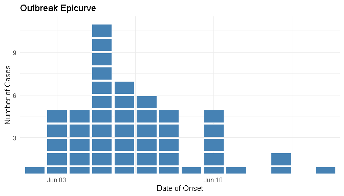
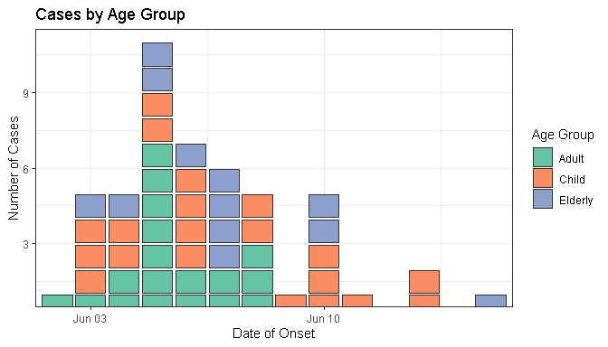
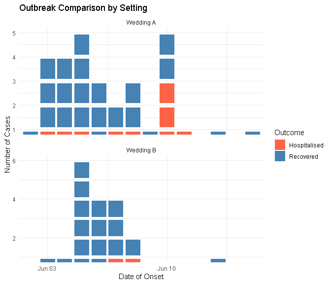
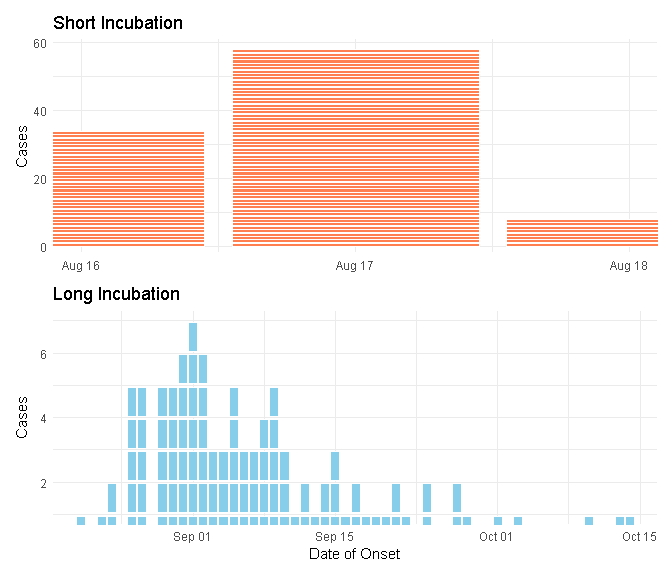
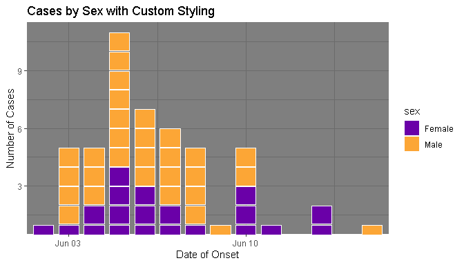

Collection of miscellaneous R functions of interest only to Paul
This package provides tools for epidemiological visualization, data simulation, and an interactive Shiny app for building SQL queries for Amazon Redshift.
Installation
Install the development version from GitHub:
# Install remotes if you don't have it
# install.packages("remotes")
remotes::install_github('prcleary/paulmisc')Features
Epidemiological Tools
-
geom_epicurve()- A ggplot2 geom for creating classical epidemic curves where each case is represented as a small square -
simulate_outbreak()- Generate realistic outbreak data for testing and examples
Shiny Applications
-
run_redshift_query_builder()- Interactive Shiny app for building Amazon Redshift SQL queries without writing code. Features include:- Form-based query construction
- Support for WHERE conditions, date filters, aggregates, GROUP BY, ORDER BY
- Real-time validation and error checking
- One-click copy to clipboard
- Dark-themed, modern UI
Usage
Basic Epidemic Curve
Create a simple epidemic curve from simulated outbreak data:
# Simulate a point-source outbreak
cases <- simulate_outbreak(n = 50, seed = 42)
# Create basic epicurve
ggplot(cases, aes(x = onset_date)) +
geom_epicurve() +
labs(
title = "Outbreak Epicurve",
x = "Date of Onset",
y = "Number of Cases"
) +
theme_minimal()
Colored by Category
Visualize cases by demographic or clinical characteristics:
# Color by age group
ggplot(cases, aes(x = onset_date, fill = age_group)) +
geom_epicurve(colour = "grey20") +
scale_fill_brewer(palette = "Set2") +
labs(
title = "Cases by Age Group",
x = "Date of Onset",
y = "Number of Cases",
fill = "Age Group"
) +
theme_bw()
Faceted Analysis
Compare outbreaks across different settings or groups:
# Facet by setting and color by outcome
ggplot(cases, aes(x = onset_date, fill = outcome)) +
geom_epicurve(height = 0.85) +
facet_wrap(~ setting, ncol = 1, scales = "free_y") +
scale_fill_manual(
values = c("Recovered" = "steelblue", "Hospitalised" = "tomato")
) +
labs(
title = "Outbreak Comparison by Setting",
x = "Date of Onset",
y = "Number of Cases",
fill = "Outcome"
) +
theme_minimal() +
theme(panel.spacing = unit(1, "lines"))
Custom Incubation Periods
Simulate outbreaks with different epidemiological characteristics:
# Short incubation period (e.g., food poisoning)
short_incubation <- simulate_outbreak(
n = 100,
exposure = as.Date("2024-08-15"),
meanlog = 0.5, # ~1.6 day median
sdlog = 0.3,
seed = 123
)
# Long incubation period (e.g., viral hepatitis)
long_incubation <- simulate_outbreak(
n = 100,
exposure = as.Date("2024-08-15"),
meanlog = 3, # ~20 day median
sdlog = 0.5,
seed = 123
)
# Compare side by side
library(patchwork)
p1 <- ggplot(short_incubation, aes(x = onset_date)) +
geom_epicurve(fill = "coral") +
labs(title = "Short Incubation", x = NULL, y = "Cases") +
theme_minimal()
p2 <- ggplot(long_incubation, aes(x = onset_date)) +
geom_epicurve(fill = "skyblue") +
labs(title = "Long Incubation", x = "Date of Onset", y = "Cases") +
theme_minimal()
p1 / p2
Advanced Customization
Fine-tune the appearance of individual case squares:
# Adjust spacing and size
ggplot(cases, aes(x = onset_date, fill = sex)) +
geom_epicurve(
width = 0.8, # Horizontal spacing (0-1)
height = 0.95, # Vertical spacing (0-1, higher = less gap)
colour = "white",
linewidth = 0.2
) +
scale_fill_viridis_d(option = "plasma", begin = 0.2, end = 0.8) +
labs(
title = "Cases by Sex with Custom Styling",
x = "Date of Onset",
y = "Number of Cases"
) +
theme_dark()
Redshift SQL Query Builder
Launch the interactive Shiny app for building SQL queries:
# Launch the Redshift SQL Query Builder Shiny app
run_redshift_query_builder()The app provides a user-friendly interface for:
- Table Selection: Specify schema, table name, and optional alias
- Column Selection: Choose all columns, specific columns with DISTINCT, or aggregate functions (COUNT, SUM, AVG, MIN, MAX, COUNT DISTINCT)
- WHERE Conditions: Add up to 3 conditions with AND/OR logic using various operators (=, !=, >, <, >=, <=, LIKE, ILIKE, IN, NOT IN, IS NULL, IS NOT NULL, BETWEEN)
- Date Filters: Filter by date ranges, last N days, current month/year, or specific dates using Redshift-specific functions like DATEADD and TRUNC
- Sorting & Grouping: GROUP BY, HAVING, ORDER BY with LIMIT and OFFSET
- Validation: Real-time error checking with helpful validation messages
- Copy to Clipboard: One-click copy of the generated SQL query
The app features a modern dark theme and includes helpful Redshift SQL tips for common functions and patterns.
Development
Setup
Clone the repository and install development dependencies:
# Install development packages
install.packages(c("devtools", "testthat", "roxygen2", "pkgdown"))
# Load the package for development
devtools::load_all()Testing
Run the test suite to ensure everything works correctly:
# Run all tests
devtools::test()
# Run tests with coverage report
covr::package_coverage()Documentation
Update documentation after modifying roxygen comments:
# Generate documentation from roxygen comments
devtools::document()
# Preview documentation for a function
?geom_epicurvePackage Checks
Run R CMD check to ensure the package meets CRAN standards:
# Run comprehensive package checks
devtools::check()
# Check for common issues
goodpractice::gp()Website
This package uses pkgdown for documentation website generation:
# Build the website
pkgdown::build_site()
# Preview locally
pkgdown::preview_site()